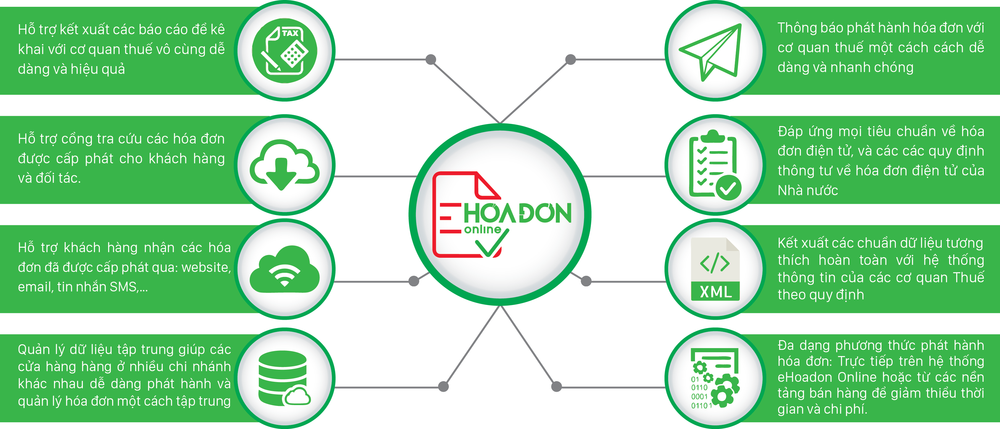

<section class="oe_container">
    <div class="oe_row oe_spaced">
        <h2 class="oe_slogan">eHoaDon Tax Code Lookup</h2>
        <div class="oe_demo oe_picture">
            
        </div>
        <p>
            Tra cứu thông tin người nộp thuế Việt Nam theo mã số thuế qua dịch
            vụ XInvoice và tự điền thông tin hóa đơn điện tử vào liên hệ Odoo.
        </p>
        <p>
            Look up Vietnamese taxpayer information by tax code using the
            XInvoice service and fill the e-invoice details on Odoo contacts.
        </p>
        <h3>Tính năng / Features</h3>
        <ul>
            <li>Tra cứu tên và địa chỉ người nộp thuế / Retrieve taxpayer name and address</li>
            <li>Tự điền thông tin hóa đơn điện tử vào liên hệ / Fill e-invoice details on the contact</li>
            <li>Kiểm tra mã số thuế và báo lỗi tra cứu hoặc kết nối / Validate tax codes and report lookup or connection errors</li>
        </ul>
        <p>
            Module yêu cầu eHoaDon Integration và kết nối internet để truy cập
            dịch vụ tra cứu XInvoice.
        </p>
        <p>
            Requires the eHoaDon Integration module and an internet connection
            to access the XInvoice lookup service.
        </p>
    </div>
</section>
